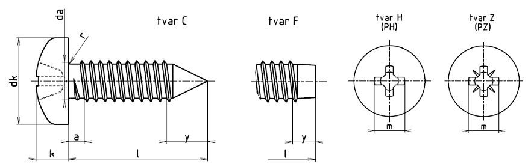

Příklad označení šroubu do plechu s půlkulatou hlavou se závitem ST8, délky l = 16 mm, s hrotem tvaru C a s křížovou drážkou tvaru Z:
ŠROUB DO PLECHU ISO 7049 – ST8 ×16 – C – Z
| Závit | ST2,2 | ST2,9 | ST3,5 | ST4,2 | ST4,8 | ST5,5 | ST6,3 | ST8 | ST9,5 | ||
|---|---|---|---|---|---|---|---|---|---|---|---|
| rozteč P | 0,8 | 1,1 | 1,3 | 1,4 | 1,6 | 1,8 | 1,8 | 2,1 | 2,1 | ||
| amax.1) | 0,8 | 1,1 | 1,3 | 1,4 | 1,6 | 1,8 | 1,8 | 2,1 | 2,1 | ||
| da max. | 2,8 | 3,5 | 4,1 | 4,9 | 5,6 | 6,3 | 7,3 | 9,2 | 10,7 | ||
| dk max. | 4 | 5,6 | 7 | 8 | 9,5 | 11 | 12 | 16 | 20 | ||
| dk min. | 3,7 | 5,3 | 6,64 | 7,64 | 9,14 | 10,57 | 11,57 | 15,57 | 19,48 | ||
| kmax. | 1,6 | 2,4 | 2,6 | 3,1 | 3,7 | 4 | 4,6 | 6 | 7,50 | ||
| kmin. | 1,4 | 2,15 | 2,35 | 2,8 | 3,4 | 3,7 | 4,3 | 5,6 | 7,1 | ||
| rmin. | 0,1 | 0,1 | 0,1 | 0,2 | 0,2 | 0,25 | 0,25 | 0,4 | 0,4 | ||
| rf≈ | 3,2 | 5 | 6 | 6,5 | 8 | 9 | 10 | 13 | 16 | ||
| Křížová drážka | Velikost křížové drážky | 0 | 1 | 2 | 3 | 4 | |||||
| Tvar H | mpomocný rozměr | 1,9 | 3 | 3,9 | 4,4 | 4,9 | 6,4 | 6,9 | 9 | 10,1 | |
| hloubkamin. | 0,85 | 1,4 | 1,4 | 1,9 | 2,4 | 2,6 | 3,1 | 4,15 | 5,2 | ||
| hloubkamax. | 1,2 | 1,8 | 1,9 | 2,4 | 2,9 | 3,1 | 3,6 | 4,7 | 5,8 | ||
| Tvar Z | mpomocný rozměr | 2 | 3 | 4 | 4,4 | 4,8 | 6,2 | 6,8 | 8,9 | 10,1 | |
| hloubkamin. | 0,95 | 1,45 | 1,5 | 1,95 | 2,3 | 2,55 | 3,05 | 4,05 | 5,25 | ||
| hloubkamax. | 1,2 | 1,75 | 1,9 | 2,35 | 2,75 | 3 | 3,5 | 4,5 | 5,7 | ||
| ypomocný rozměr2) | Tvar C | 2 | 2,6 | 3,2 | 3,7 | 4,3 | 5 | 6 | 7,5 | 8 | |
| Tvar F | 1,6 | 2,1 | 2,5 | 2,8 | 3,2 | 3,6 | 3,6 | 4,2 | 4,2 | ||
| délka l |
tvar C Δl |
tvar F4) lmin. |
Závit | ||||||||
|---|---|---|---|---|---|---|---|---|---|---|---|
| ST2,2 | ST2,9 | ST3,5 | ST4,2 | ST4,8 | ST5,5 | ST6,3 | ST8 | ST9,5 | |||
| 4,5 | 0,8 | 3,7 | + | – | – | – | – | – | – | – | – |
| 6,5 | 0,8 | 5,7 | + | + | – | – | – | – | – | – | – |
| 9,5 | 0,8 | 8,7 | + | + | + | + | + | – | – | – | – |
| 13 | 0,8 | 12,2 | + | + | + | + | + | + | + | – | – |
| 16 | 0,8 | 15,2 | + | + | + | + | + | + | + | + | + |
| 19 | 0,8 | 18,2 | + | + | + | + | + | + | + | + | |
| 22 | 0,8 | 20,7 | + | + | + | + | + | + | + | ||
| 25 | 0,8 | 23,7 | + | + | + | + | + | + | + | ||
| 32 | 1,3 | 30,7 | + | + | + | + | + | + | |||
| 38 | 1,3 | 36,7 | + | + | + | + | + | ||||
| 45 | 1,3 | 43,5 | + | + | |||||||
| 50 | 1,3 | 48,5 | + | + | |||||||
| Materiál | Ocel podle ISO 2702 | |
|---|---|---|
| Závit | podle ISO 1478 | |
| Mechanické vlastnosti | podle ISO 2702 | |
| Mezní rozměry, tolerance tvaru a polohy |
Výrobní třída | A |
| Mezinárodní norma | ISO 4759-1 | |
| Povrch | hladký Požadavky na elektrolyticky vyloučené povlaky viz ISO 4042. Jestliže je požadována jiná povrchová ochrana, musí být dohodnuta mezi dodavatelem a odběratelem. |
|